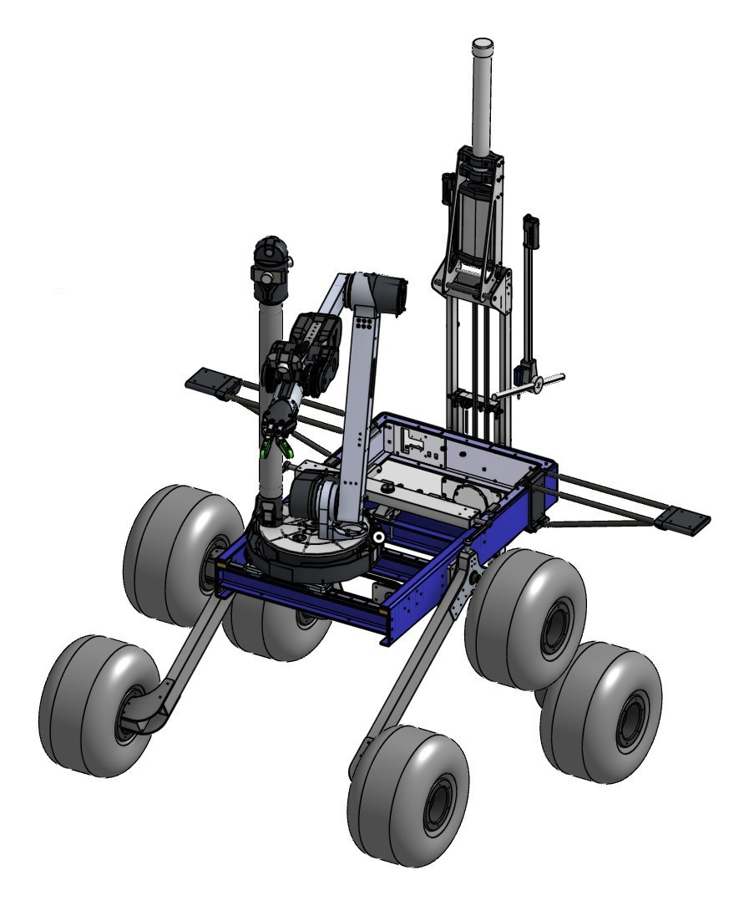
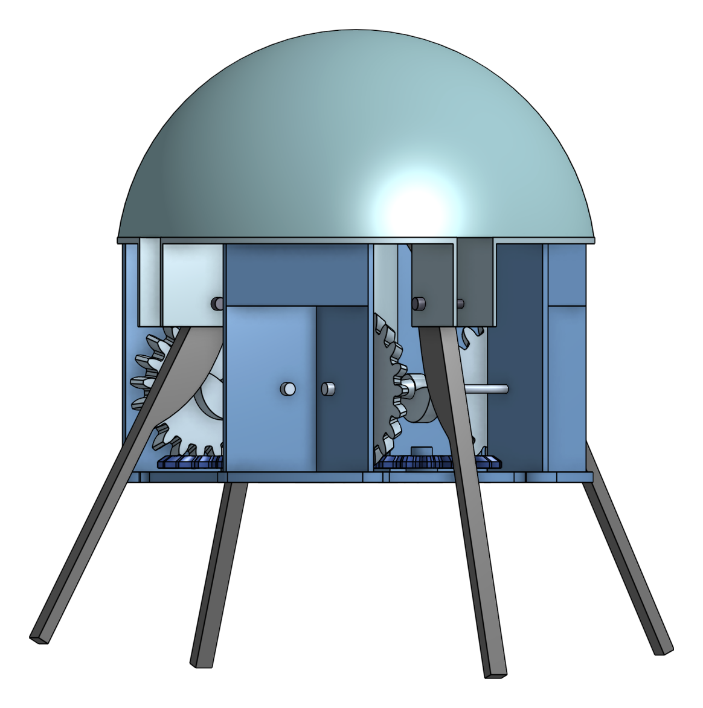
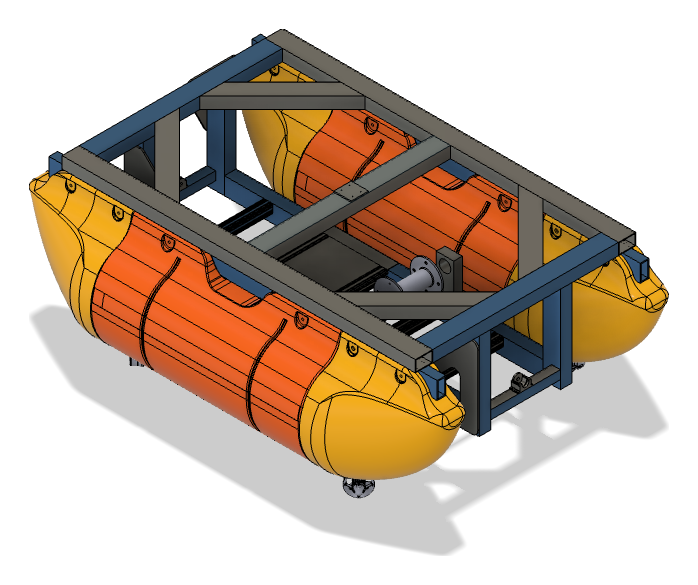

Aerospace Engineering student at UC San Diego. I design hardware for a Mars rover and an Arctic surface vessel, and I designed and simulated a jellyfish-inspired underwater propulsion mechanism.

On UC San Diego's Mars rover team, I design parts of the robotic arm: a science claw that our team used at URC 2026, a redesigned forearm electronics enclosure, and a two-axis camera gimbal of my own design, now in progress.

